| Eclipse Corner Article |

Summary
One of the major tasks of adding a new language to an Eclipse-based IDE is debugging support. A debugger needs to start and stop the program being debugged, suspend and resume, single-step, manage breakpoints and watch points, and so on. This article explains the Eclipse Platform debug framework and steps through a simple, yet illustrative, example of adding debug support for a new language.By Darin Wright, IBM Rational Software Group
Bjorn Freeman-Benson, Predictable Software
August 27, 2004
No matter how simple we want to make the topic, there is no getting around the fact that adding a new language to an Eclipse IDE is not a trivial task. This paper, together with its two companion papers, focuses on the launching-running-debugging side of the process. Other aspects of adding new language support include: editors, code assist, refactorings, new views, builders, and other tools. These features are outside the scope of these papers.
The first paper in this series, We Have Lift-off: The Launching Framework in Eclipse, describes the launching framework through an applet launcher example. In this paper, we describe the basic debugging framework using a small assembly language example. And in our third paper (not yet published), Enhancing the Eclipse Debugger, we describe how to enhance the UI for our assembly language debugger by adding all the little bells and whistles that one expects in modern IDEs.
The Eclipse SDK provides a framework for building and integrating debuggers, collectively known as the debug platform. The debug platform defines a set of Java™ interfaces modeling a set of artifacts and actions common to many debuggers, known as the debug model. For example, some common debug artifacts are threads, stack frames, variables, and breakpoints; and some common actions are suspending, stepping, resuming, and terminating. The platform does not provide an implementation of a debugger – that is the job of language tool developers. However, the platform does provide a basic debugger user interface (that is, the debug perspective) that can be enhanced with features specific to a particular debugger. The base user interface operates against the debug model interfaces, providing views for a program’s call stack, variables, breakpoints, watch items, and console I/O, and allows a user to step through source code. The debug platform also provides a framework for launching applications from within the Eclipse IDE, and a framework to perform source lookup.
In order to keep this paper to the stated goal of “how to write a debugger,” and away from the larger problem of “how to add a support for a new language,” we make the following assumptions:
To demonstrate how to write a debugger for Eclipse, we need a language and a run time to debug. For this example, we chose an enhanced push down automata (PDA) assembly language and a simple interpreter implemented in Perl. Each line contains a single operation and any number of arguments. Our language differs from a standard PDA in two major ways:
In order to actually run this example, you will need a Perl interpreter. Linux®™ comes with Perl. For Microsoft® Windows®, we use either ActivePerl (http://www.activeperl.com/) or Indigo Perl (http://www.indigostar.com/). You also have to set the string substitution variable named “perlExecutable” to the complete path to your Perl interpreter. (For example, ours was C:\perl\bin\perl.exe) To set a string substitution variable, use the Windows > Preferences > Run/Debug > String Substitution preferences page.
Here is an annotated example of the Fibonacci computation (note that the annotations themselves are not valid syntax in this language – in this language, all comments must start at column 1 and be the entire line):
push 6 call Fibonacci function call with one argument on the data stack output print result to stdout halt # # f(n) = f(n-1) + f(n-2) # f(0) = 1 # f(1) = 1 # :fibonacci var n define variable n on control stack pop $n get n from data stack push $n branch_not_zero gt0 push 1 f(0) = 1 return return with one value on data stack :gt0 push $n dec branch_not_zero gt1 push 1 f(1) = 1 return return with one value on data stack :gt1 push $n stack: n dec stack: n-1 call fibonacci stack: f(n-1) push $n stack: f(n-1) n dec stack: f(n-1) n-1 dec stack: f(n-1) n-2 call Fibonacci stack: f(n-1) f(n-2) add stack: f(n-1)+f(n-2) return return with one value on data stack
Our PDA assembly language interpreter can be started in either run mode or debug mode. When started in debug mode, the interpreter listens for debug commands on a specified local TCP socket and sends debug events to a separate local TCP socket. The commands include:
The debug events that are reported asynchronously to the second socket include:
First Notation Note: The class and object diagrams in this article use a mostly UML syntax. It is only mostly UML because, unfortunately, UML does not provide a way to model extension points and extensions. Therefore, we decided to use a dashed box to indicate an extension in the plugin.xml file. We also use a few non-standard, but labeled, lines with arrows to indicate certain semantics.Second Notation Note: The Eclipse design guidelines include separating the code for the model from the code for the user interface. We abide by that design principle in our example code resulting in two plug-ins. The extensions and code discussed in this article come from both plug-ins.
Third Notation Note: Each code and plugin.xml fragment in this article includes a header describing the plug-in, package, class, and other details of its location in the complete example code. In order to fit all this on one line, the header abbreviates the org.eclipse.debug.examples.pda.core plug-in as “core,” the org.eclipse.debug.examples.core.pda.model package as “pda.model,” etc.
Using the previous assumptions, we already have a launch configuration type (org.eclipse.debug.examples.core.launchConfigurationType.pda) and a launch configuration delegate (PDALaunchDelegate). To add debugger support, we modify the delegate by adding code for DEBUG_MODE that performs the following actions:
Plug-in: core, Package: pda.launching, Class: PDALaunchDelegate, Method: launch
commandList.add(file.getLocation().toOSString());int requestPort = -1; . int eventPort = -1; . if (mode.equals(ILaunchManager.DEBUG_MODE)) { . requestPort = findFreePort(); . eventPort = findFreePort(); . if (requestPort == -1 || eventPort == -1) { . abort("Unable to find free port", null); . } . commandList.add("-debug"); . commandList.add("" + requestPort ); . commandList.add("" + eventPort ); . } String[] commandLine = (String[]) commandList.toArray(new String[commandList.size()]); Process process = DebugPlugin.exec(commandLine, null); IProcess p = DebugPlugin.newProcess(launch, process, path);
if (mode.equals(ILaunchManager.DEBUG_MODE)) { . IDebugTarget target = new PDADebugTarget(launch,p,requestPort,eventPort ); . launch.addDebugTarget(target); . }
The Eclipse debug model is documented in the Platform Plug-in Developer Guide under Programmer’s Guide > Program debug and launch support> Debugging a Program> Platform debug model. Being more visually oriented, we prefer to look at pictures, so here is a mostly UML diagram of the Eclipse platform debug model:
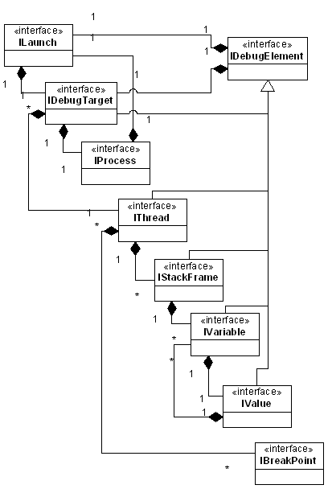
To implement our debugger (the PDA debugger), we have to provide an implementation of each of these debug model interfaces. Most of the implementations are very straightforward except, perhaps, these small items:
public PDALineBreakpoint(IResource resource, int lineNumber) throws CoreException {
IMarker marker = resource.createMarker(
"org.eclipse.debug.examples.core.pda.lineBreakpoint.marker");
setMarker(marker);
setEnabled(true);
ensureMarker().setAttribute(IMarker.LINE_NUMBER, lineNumber);
ensureMarker().setAttribute(IBreakpoint.ID, IPDAConstants.ID_PDA_DEBUG_MODEL);
}
There are two main issues to keep in mind when implementing the debug model classes:
The incorrect blocking command would block the entire Eclipse user interface until the interpreter had finished stepping. In the case of infinite loops and other client program defects, the worst case is that the interpreter might never return thus leaving the Eclipse user interface completely frozen.
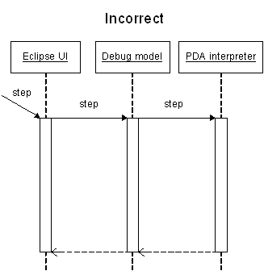
By sending the step command asynchronously, the Eclipse user interface remains responsive while the interpreter performs the command. (For those readers who are not 100% familiar with UML, notice the difference in the arrows: a synchronous call has a full arrow head and an asynchronous message has a half arrow head.)
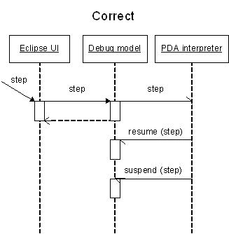
In our debug model, the PDADebugTarget is where most of the action happens because the debug target is where we centralize the communication with the PDA interpreter. For example, when the variable view asks a variable for its value, the variable asks the debug target to ask the interpreter for the value.
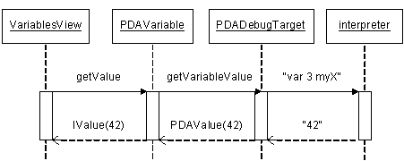
As described above, the debug
interface to our interpreter consists of two sockets: one for debug commands and
one for debug events. Thus when we create our debug target,
 first we initialize some instance
variables (our launch, our process, our one thread, etc), then
first we initialize some instance
variables (our launch, our process, our one thread, etc), then
 we open two debug sockets with readers
and writers, then
we open two debug sockets with readers
and writers, then  we start a thread to
listen on the event socket (we are using the Eclipse background process
mechanism), and lastly
we start a thread to
listen on the event socket (we are using the Eclipse background process
mechanism), and lastly
 we register to listen for breakpoint
changes in order to send the “set” and “clear” commands to the interpreter.
we register to listen for breakpoint
changes in order to send the “set” and “clear” commands to the interpreter.
Plug-in: core, Package: pda.model, Class: PDADebugTarget
public PDADebugTarget(ILaunch launch, IProcess process,
int requestPort, int eventPort) throws CoreException {
super(null);
fLaunch = launch;
. fTarget = this;
. fProcess = process;
. fThread = new PDAThread(this);
. fThreads = new IThread[] {fThread};
try {
. fRequestSocket = new Socket("localhost", requestPort);
. fRequestWriter = new PrintWriter(fRequestSocket.getOutputStream());
. fRequestReader = new BufferedReader(new InputStreamReader(
. fRequestSocket.getInputStream()));
. fEventSocket = new Socket("localhost", eventPort);
. fEventReader = new BufferedReader(new InputStreamReader(
. fEventSocket.getInputStream()));
. } catch (UnknownHostException e) {
. abort("Unable to connect to PDA VM", e);
. } catch (IOException e) {
. abort("Unable to connect to PDA VM", e);
. }
 fEventDispatch = new EventDispatchJob();
. fEventDispatch.schedule();
fEventDispatch = new EventDispatchJob();
. fEventDispatch.schedule();
 DebugPlugin.getDefault().getBreakpointManager().addBreakpointListener(this);
}
DebugPlugin.getDefault().getBreakpointManager().addBreakpointListener(this);
}
Now that communications with the debug sockets on the interpreter are initialized, the debug target methods can send the appropriate commands. For example, step and getVariableValue:
Plug-in: core, Package: pda.model, Class: PDADebugTarget
public void step() throws DebugException {
sendRequest("step");
}
private void sendRequest(String request) throws DebugException {
synchronized (fRequestSocket) {
fRequestWriter.println(request);
fRequestWriter.flush();
try {
// wait for "ok"
String response = fRequestReader.readLine();
} catch (IOException e) {
abort("Request failed: " + request, e);
}
}
}
protected IValue getVariableValue(PDAVariable variable) throws DebugException {
synchronized (fRequestSocket) {
fRequestWriter.println("var "
+ variable.getStackFrame().getIdentifier()
+ " " + variable.getName());
fRequestWriter.flush();
try {
String value = fRequestReader.readLine();
return new PDAValue(this, value);
} catch (IOException e) {
abort(MessageFormat.format("Unable to retrieve value for variable {0}",
new String[]{variable.getName()}), e);
}
}
return null;
}
There are many more "communicate with the interpreter" methods. Notice that all communication with the interpreter is serialized using synchronized blocks – as mentioned previously, this is necessary because the Eclipse platform is inherently multi-threaded but our PDA interpreter is not.
Note that our getVariableValue method is synchronous which goes against our earlier caveat to avoid using blocking communication with the target due to the risk of freezing the Eclipse user interface. We chose the synchronous "send the request and wait for reply" rather than an asychronous "send command and later receive the response in an event" for its simplicity in explaining the essential concepts of communication.
The add-a-breakpoint method is a little more interesting because it has to
check if
 the breakpoint is valid and
the breakpoint is valid and
 active, but otherwise it has the
same “communicate with the interpreter” style. The key to determining if the
breakpoint is valid is realizing that breakpoint listeners (like this one) get
notified of all breakpoint changes, thus we filter for breakpoints
active, but otherwise it has the
same “communicate with the interpreter” style. The key to determining if the
breakpoint is valid is realizing that breakpoint listeners (like this one) get
notified of all breakpoint changes, thus we filter for breakpoints
 supported by our debug model and for
supported by our debug model and for
 our PDA program:
our PDA program:
Plug-in: core, Package: pda.model, Class: PDADebugTarget
public void breakpointAdded(IBreakpoint breakpoint) {
if (supportsBreakpoint(breakpoint)) {
try {
if (breakpoint.isEnabled()) {
synchronized (fRequestSocket) {
try {
sendRequest("set "
+ (((ILineBreakpoint)breakpoint).getLineNumber() - 1));
} catch (CoreException e) {
}
}
}
} catch (CoreException e) {
}
}
}
public boolean supportsBreakpoint(IBreakpoint breakpoint) {
if (breakpoint.getModelIdentifier().equals(IPDAConstants.ID_PDA_DEBUG_MODEL)) {
try {
String program = getLaunch().getLaunchConfiguration()
.getAttribute(IPDAConstants.ATTR_PDA_PROGRAM,
(String)null);
if (program != null) {
IMarker marker = breakpoint.getMarker();
if (marker != null) {
IPath p = new Path(program);
return marker.getResource().getFullPath().equals(p);
}
}
} catch (CoreException e) {
}
}
return false;
}
The other interesting piece of our debug target is the startup code. When the interpreter starts up, it has no breakpoints. Users, having set breakpoints in the code using the Eclipse user interface, expect those breakpoints to work. Thus, after the interpreter starts up, but before it processes any instructions, the debug target has to reach in and set the initial breakpoints. These initial breakpoints are known as deferred breakpoints.
The standard way this initial setup is accomplished is by having the
interpreter suspend on startup,  wait
for the debug target to set all the breakpoints, and then
wait
for the debug target to set all the breakpoints, and then
 have the debug target resume the
interpreter. (Our apologies to the reader here, but we’ve gotten a little out of
order in describing things. The
have the debug target resume the
interpreter. (Our apologies to the reader here, but we’ve gotten a little out of
order in describing things. The
 started method is called by our debug
event handler right after the interpreter starts. But at this point in the
paper, we have not described events, so you’ll just have to trust us on this
one.)
started method is called by our debug
event handler right after the interpreter starts. But at this point in the
paper, we have not described events, so you’ll just have to trust us on this
one.)
Plug-in: core, Package: pda.launching, Class: PDADebugTarget
Here’s a sequence diagram showing how the debug target, the interpreter, and the events interact:
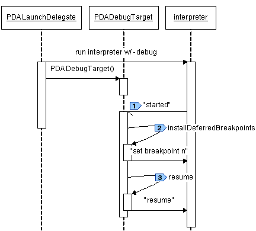
Note that because the interpreter events are delivered over a TCP socket to the PDADebugTarget, even if the interpreter starts up and sends the "started" event before the PDATarget is instantiated, the "started" event will be queued in the socket. The potential race condition between the interpreter and debug target is eliminated by having the interpreter suspend on startup.
The Eclipse debug model uses debug events (DebugEvent) to describe events that occur as a program is being debugged. Each element in the debug model has a specific set of events that is supports – all of this is documented in the Javadoc of DebugEvent and in the Platform Plug-in Developer Guide.
As described previously, our example PDA interpreter uses two sockets to communicate with its debugger: a command channel and an event channel. Our debugger uses synchronous RPC over the command channel (send command, block, receive reply), but the events can arrive asynchronously so the debugger must use a separate thread to listen on the event channel.
We create the separate event listener thread when we create the debug target (see previous). The main routine of the thread is a dispatch loop that reads from the event channel and dispatches to the appropriate event behavior:
Plug-in: core, Package: pda.model, Class: PDADebugTarget.EventDispatchJob
protected IStatus run(IProgressMonitor monitor) {
String event = "";
while (!isTerminated() && event != null) {
try {
event = fEventReader.readLine();
if (event != null) {
fThread.setBreakpoints(null);
fThread.setStepping(false);
…dispatch to the event behavior method…
}
} catch (IOException e) {
terminated();
}
}
return Status.OK_STATUS;
}
Our interpreter sends six kinds of events (see previous), but we only handle four kinds with five subtypes. We simply (and safely) ignore the events that we do not yet handle.
if (event.equals("started")) {
started();
} else if (event.equals("terminated")) {
terminated();
} else if (event.startsWith("resumed")) {
if (event.endsWith("step")) {
fThread.setStepping(true);
resumed(DebugEvent.STEP_OVER);
} else if (event.endsWith("client")) {
resumed(DebugEvent.CLIENT_REQUEST);
}
} else if (event.startsWith("suspended")) {
if (event.endsWith("client")) {
suspended(DebugEvent.CLIENT_REQUEST);
} else if (event.endsWith("step")) {
suspended(DebugEvent.STEP_END);
} else if (event.indexOf("breakpoint") >= 0) {
breakpointHit(event);
}
}
The event handlers are also simple: they turn around and fire the appropriate DebugEvent to all the listeners. As implementers of the debug model, we don’t have to know who those listeners are, but curiosity gets the better of us and we want to know. The answer is “the debug views”. The debug views listen for events and use those events to update the user interface to show the current state of the debugged program.
In the debug target and the debug element:
Plug-in: core, Package: pda.model, Class: PDADebugTarget
private void resumed(int detail) {
fSuspended = false;
fThread.fireResumeEvent(detail);
}
Plug-in: core, Package: pda.model, Class: PDADebugElement
public void fireResumeEvent(int detail) {
fireEvent(new DebugEvent(this, DebugEvent.RESUME, detail));
}
Handling the suspended-due-to-breakpoint event in the debug target is a
little more involved because the IThread object keeps track of which breakpoint
was hit. The IThread object keeps track of the breakpoint that caused the
suspension in case the user interface wants to use that information in labels or
icons or some other view. To gather this information, we
 extract the breakpoint number from the
PDA interpreter event message,
extract the breakpoint number from the
PDA interpreter event message,
 find the corresponding breakpoint
object, and then
find the corresponding breakpoint
object, and then
 annotate the current thread object
with that breakpoint.
annotate the current thread object
with that breakpoint.
Plug-in: core, Package: pda.model, Class: PDADebugTarget
private void breakpointHit(String event) {
int lastSpace = event.lastIndexOf(' ');
if (lastSpace > 0) {
String line = event.substring(lastSpace + 1);
int lineNumber = Integer.parseInt(line);
IBreakpoint[] breakpoints = DebugPlugin.getDefault().getBreakpointManager()
. .getBreakpoints(IPDAConstants.ID_PDA_DEBUG_MODEL);
. for (int i = 0; i < breakpoints.length; i++) {
. IBreakpoint breakpoint = breakpoints[i];
. if (supportsBreakpoint(breakpoint)) {
. if (breakpoint instanceof ILineBreakpoint) {
. ILineBreakpoint lineBreakpoint = (ILineBreakpoint) breakpoint;
. try {
. if (lineBreakpoint.getLineNumber() == lineNumber) {
fThread.setBreakpoints(new IBreakpoint[]{breakpoint});
break;
}
} catch (CoreException e) {
}
}
}
}
}
suspended(DebugEvent.BREAKPOINT);
}
Here are two sequences showing how the events arrive asynchronously and are processed by the Eclipse debug framework. First, here is how a step action from the user interface gets sent to the interpreter as a “step” command on the command channel. The interpreter operates asynchronously, sending events (“resume” and then “suspend”) back to the debugger by way of the event channel.
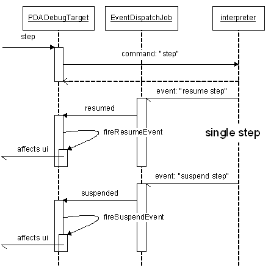
Very similarly, here is the sequence for a resume action, followed by the interpreter running for a while and then hitting a breakpoint:
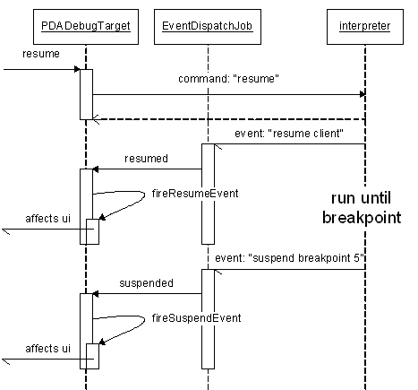
The astute reader will notice that the sequence diagram is exactly the same (except for the slightly different command and different subevents). This regularity to the structure and behavior is a deliberate design decision in the Eclipse debug framework.
Once our debug model and event handler are in place, the Eclipse debugger will work with our interpreter, but its user interface will be quite generic and uninteresting. For example, the generic debugger does not show or highlight source code.
Highlighting the current source code line or statement is de rigueur in modern debuggers, so our next step is to enable what is known as “source code lookup” in our debugger. To do so, we add three new pieces:
To see how this works, let’s start by examining the Eclipse framework for displaying source code of stack frames.
In the most general case, the launch object has a source locator object. When the source code for a stack frame needs to be displayed, the stack frame is passed to the source locator method to retrieve the source element. The stack frame’s model identifier is used to find the debug model presentation object (by way of the corresponding extension). The debug model presentation maps the source element to an editor id and editor input, which are then used by the workbench to open an editor to display the source code.
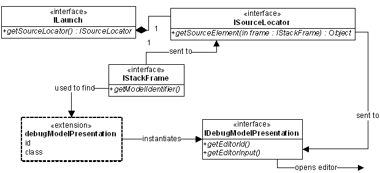
If the launch object does not have a source locator object (that is, a source locator is not assigned by the launch delegate), the debug framework uses the sourceLocatorId attribute of the launchConfigurationType extension to instantiate an ISourceLocator object and store it in the launch object. Thereafter, the rest of the code works as previously described.
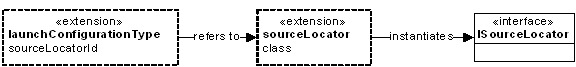
If your source lookup mechanism is standard, that is, files in directories, you can use the Eclipse debug framework’s standard source lookup. The ISourceLookupDirector mechanism looks up source files in directories (and zips and jars) along a path (known as the source lookup path). The framework has three pieces:
The ISourceLookupDirector is an ISourceLocator, so once you have implemented an ISourceLookupDirector, you place the class name in the sourceLocator extension.
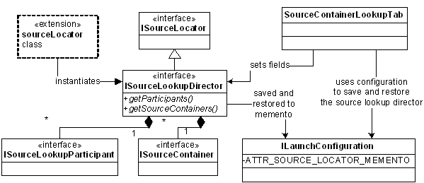
Although ISourceLookupDirector is available as an interface for reimplementation, most debuggers use the default implementation provided by the Eclipse debug framework. The AbstractSourceLookupDirector provides the algorithm for looking source files up along a source path. The only unimplemented method is initializeParticipants, which creates the collection of ISourceLookupParticipants for mapping the stack frames to filenames.
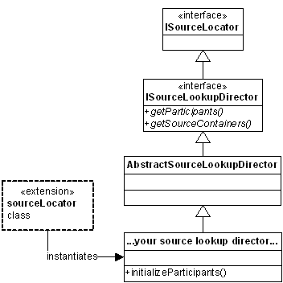
The AbstractSourceLookupDirector has one more trick up its sleeve: if the user has not specified the source path (that is, the source containers) either programmatically or by way of the SourceContainerLookupTab, the AbstractSourceLookupDirector will compute the default source path. Here’s how it works:
When initialized, the AbstractSourceLookupDirector has a default source path of a single container: a DefaultSourceContainer. The DefaultSourceContainer uses an ISourcePathComputer (which in turn uses an ISourcePathComputerDelegate) to compute the source path. The source path computer is reused to recompute the default source path until such time as the source containers in the source lookup director are explicitly set to something other than the default.
The source path computer is defined for each launch configuration type using the sourcePathComputer extension. The source path computer delegate has one method: computeSourceContainers.
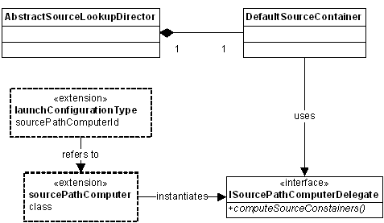
The simplest solution to source code lookup is to reuse that wonderful framework the Eclipse debug framework provides. Being good developers, we seek to reuse rather than reinvent, so our example uses an AbstractSourceLookupDirector to lookup source files, and a source path computer to compute the default source lookup path.
Notation note: The six steps below are strongly interconnected and thus the code references... are uniform across the six steps. In other words, the
For additional simplicity, we chose to use the “extension defined source
locator” described above rather than having our launch delegate create and
assign the source locator to the launch object. Thus we start by adding
 a source locator id to our launch
configuration type. Then we added an extension for our source locator id pointing to
a source locator id to our launch
configuration type. Then we added an extension for our source locator id pointing to
 our source lookup director class.
our source lookup director class.
Plug-in: core, Extension: org.eclipse.debug.core.launchConfigurationTypes
<launchConfigurationType
…other attributes…
sourceLocatorId="org.eclipse.debug.examples.core.sourceLookupDirector.pda"
</launchConfigurationType>
Plug-in: core,
Extension:  org.eclipse.debug.core.sourceLocators
org.eclipse.debug.core.sourceLocators
<sourceLocator
name="PDA Source Lookup Director"
class="org.eclipse.debug.examples.core.pda.launching.PDASourceLookupDirector"
id="org.eclipse.debug.examples.core.sourceLookupDirector.pda">
</sourceLocator>
The abstract class does most of the work, but our PDASourceLocatorDirector
subclass of AbstractSourceLookupDirector still has to initialize
 the set of participants. In our case,
the set of participants is the singleton PDASourceLookupParticipant. Our
participant is trivial because in our debug model,
the set of participants. In our case,
the set of participants is the singleton PDASourceLookupParticipant. Our
participant is trivial because in our debug model,
 the stack frames keep track of their
source filenames.
the stack frames keep track of their
source filenames.
Plug-in: core, Package:
pda.launching, Class:
 PDASourceLocatorDirector
PDASourceLocatorDirector
public void initializeParticipants() {
addParticipants(new ISourceLookupParticipant[]{new PDASourceLookupParticipant()});
}
Plug-in: core, Package:
pda.launching, Class:
 PDASourceLocatorParticipant
PDASourceLocatorParticipant
public String getSourceName(Object object) throws CoreException {
if (object instanceof PDAStackFrame) {
return ((PDAStackFrame)object).getSourceName();
}
return null;
}
And that’s all it takes to configure, instantiate, and use the framework’s source path lookup director.
Next we have to deal with the default source lookup path issue. Again, being
efficient, we use the framework provided source path computer extension as
explained above. We again
 add to our launch configuration
followed by augmenting the corresponding extension to point to our source path
computer class.
add to our launch configuration
followed by augmenting the corresponding extension to point to our source path
computer class.
Plug-in: core, Extension: org.eclipse.debug.core.launchConfigurationTypes
<launchConfigurationType
…other attributes…
sourceLocatorId="org.eclipse.debug.examples.core.sourceLookupDirector.pda"
sourcePathComputerId="org.eclipse.debug.examples.core.sourcePathComputer.pda"
</launchConfigurationType>
Plug-in: core,
Extension:  org.eclipse.debug.core.sourcePathComputers
org.eclipse.debug.core.sourcePathComputers
<sourcePathComputer
class="org.eclipse.debug.examples.core.pda.launching.PDASourcePathComputerDelegate"
id="org.eclipse.debug.examples.core.sourcePathComputer.pda">
</sourcePathComputer>
Our source path computer returns a one-element source path where the one element is the ISourceContainer that contains the source file. This is the longest method we have to write to get source lookup to work.
Plug-in: core, Package: pda.launching, Class: PDASourcePathComputerDelegate
public ISourceContainer[] computeSourceContainers(
ILaunchConfiguration configuration,
IProgressMonitor monitor) throws CoreException {
String path = configuration.getAttribute(
IPDAConstants.ATTR_PDA_PROGRAM, (String)null);
ISourceContainer sourceContainer = null;
if (path != null) {
IResource resource = ResourcesPlugin.getWorkspace().getRoot()
.findMember(new Path(path));
if (resource != null) {
IContainer container = resource.getParent();
if (container.getType() == IResource.PROJECT) {
sourceContainer = new ProjectSourceContainer(
(IProject)container, false);
} else if (container.getType() == IResource.FOLDER) {
sourceContainer = new FolderSourceContainer(
container, false);
}
}
}
if (sourceContainer == null) {
sourceContainer = new WorkspaceSourceContainer();
}
return new ISourceContainer[]{sourceContainer};
}
As a penultimate step, we add the debugModelPresentation extension that will map our source element (an IFile) to an editor for the workbench to display.
Plug-in: ui, Extension: org.eclipse.debug.ui.debugModelPresentations
<debugModelPresentationclass="org.eclipse.debug.examples.ui.pda.launching.PDAModelPresentation" id="org.eclipse.debug.examples.pda"> </debugModelPresentation>
The debug model is linked to the debug model presentation in the usual way that Eclipse user interfaces are linked to Eclipse models: through the extension id. For the debugger, the IDebugElement knows which debug model it is a part of.
Plug-in: core, Package: pda.model, Class: PDADebugElement
public String getModelIdentifier() {
return IPDAConstants.ID_PDA_DEBUG_MODEL;
}
The model presentation class has many methods, but for now the only two interesting methods are those that translate source elements into editor ids and inputs.
Plug-in: ui, Package:
pda.model, Class:  PDAModelPresentation
PDAModelPresentation
public IEditorInput getEditorInput(Object element) {
if (element instanceof IFile)
return new FileEditorInput((IFile)element);
if (element instanceof ILineBreakpoint)
return new FileEditorInput((IFile)((ILineBreakpoint)element).getMarker().getResource());
return null;
}
public String getEditorId(IEditorInput input, Object element) {
if (element instanceof IFile || element instanceof ILineBreakpoint)
return "org.eclipse.ui.DefaultTextEditor";
return null;
}
The final step is to add the source path tab to our launch configuration dialog box. This is a simple one-line addition to our existing tab group class (you will recall that we had created the tab group class as part of our original launching code back when we read the first article of this series)
Plug-in: ui, Package: pda.launching, Class: PDATabGroup
public void createTabs(ILaunchConfigurationDialog dialog, String mode) {
setTabs(new ILaunchConfigurationTab[] {
new PDAMainTab(),
new SourceContainerLookupTab(),
new CommonTab()
});
}
Breakpoints are the final major component of a modern debugger that our debugger is still missing. The Eclipse debug framework support for breakpoints is documented in the Platform Plug-in Developer Guide under Programmer’s Guide > Program debug and launch support> Debugging a program> Breakpoints. Our implementation follows that design.
Because our assembly language is line-oriented, our breakpoints are line-oriented, that is, breakpoints are associated with lines and there can be at most one breakpoint per line. Other more complex languages have statement or expression-oriented breakpoints and multiple statements or expressions on a single line. We have left discussion of those to the third paper of this series Enhancing the Eclipse Debugger.
Notation note: We use the same "code references are uniform across the three steps" in this section that we used in the previous section.
The first step to implementing our line-oriented breakpoints is to define our
breakpoint data structure using the breakpoint and the resource marker. As
described in the Platform Plug-in Developer Guide, the resource marker is the
mechanism by which the breakpoint is persisted between Eclipse sessions. We
conveniently reuse code by
 creating the marker for our line-oriented breakpoints
as a subtype of the Eclipse framework line-oriented breakpoint marker. Our
marker inherits all the attributes of the Eclipse marker and we do not need,
thus we do not define, any additional attributes.
creating the marker for our line-oriented breakpoints
as a subtype of the Eclipse framework line-oriented breakpoint marker. Our
marker inherits all the attributes of the Eclipse marker and we do not need,
thus we do not define, any additional attributes.
Plug-in: core, Extension: org.eclipse.debug.core.breakpoints
<breakpoint
Plug-in: core
<extension
Note that the org.eclipse.core.resources.markers extension id is "pda.lineBreakpoint.marker" rather than "org.eclipse.debug.examples.core.pda.lineBreakpoint.marker" because the id is automatically prefixed with plug-in id, i.e., "org.eclipse.debug.examples.core".
The toggle breakpoint menu item in the Eclipse debug perspective uses a re-targetable
action provided by the debug platform to toggle the breakpoints using the appropriate
debug model. The retargetable action asks the active part (editor, view, and
so on), for its toggle breakpoint adapter. When available, the adapter is used
as a delegate to toggle breakpoints. We use plugin.xml to register the factory
for the particular editor we are using, then we define  the factory and
the factory and  the adapter. The adapter has to be an IToggleBreakpointsTarget, but other than
that, this is standard Eclipse platform code.
the adapter. The adapter has to be an IToggleBreakpointsTarget, but other than
that, this is standard Eclipse platform code.
Plug-in: ui, Extension: org.eclipse.core.runtime.adapters
<factory
Plug-in: ui, Package:
pda.model, Class:  PDABreakpointAdapterFactory
PDABreakpointAdapterFactory
public Object getAdapter(Object adaptableObject, Class adapterType) {
if (adaptableObject instanceof ITextEditor) {
ITextEditor editorPart = (ITextEditor) adaptableObject;
IResource resource = (IResource) editorPart.getEditorInput().getAdapter(IResource.class);
if (resource != null) {
String extension = resource.getFileExtension();
if (extension != null && extension.equals("pda")) {
return new PDALineBreakpointAdapter();
}
}
}
return null;
}
Note that we use the plugin.xml to register the adapter rather than programmatically registering the adapter. Using plugin.xml allows our adapter (and thus our toggle breakpoints) to be active before our lazily loaded plug-in is active.
Also note that this isn’t a completely elegant solution because we are registering an adapter factory for the text editor. Which means that if other plug-ins register a toggle breakpoints adapter for the text editor, one of the plug-ins will work and the others will not, but there is no way to know which one will be "the winner". What we, as language IDE developers, should really do is supply our own source code editor and then adapt that editor rather than the generic text editor. However, source code editing is out of the scope of this article and thus we use the simple text editor for demonstrative purposes.
Toggling a breakpoint is as expected: look for an existing breakpoint on the
line;
 if there is a breakpoint, remove it;
if there is not a breakpoint, create
one (of the class we
if there is a breakpoint, remove it;
if there is not a breakpoint, create
one (of the class we
 registered in plugin.xml).
registered in plugin.xml).
Plug-in: ui, Package:
pda.model, Class:  PDALineBreakpointAdapter
PDALineBreakpointAdapter
public void toggleLineBreakpoints(IWorkbenchPart part, ISelection selection)
throws CoreException {
ITextEditor textEditor = getEditor(part);
if (textEditor != null) {
IResource resource = (IResource) textEditor.getEditorInput()
.getAdapter(IResource.class);
ITextSelection textSelection = (ITextSelection) selection;
int lineNumber = textSelection.getStartLine();
IBreakpoint[] breakpoints = DebugPlugin.getDefault().getBreakpointManager()
.getBreakpoints(IPDAConstants.ID_PDA_DEBUG_MODEL);
for (int i = 0; i < breakpoints.length; i++) {
IBreakpoint breakpoint = breakpoints[i];
if (resource.equals(breakpoint.getMarker().getResource())) {
if (((ILineBreakpoint)breakpoint).getLineNumber() == (lineNumber + 1)) {
breakpoint.delete();
return;
}
}
}
PDALineBreakpoint lineBreakpoint = new PDALineBreakpoint(resource, lineNumber + 1);
DebugPlugin.getDefault().getBreakpointManager().addBreakpoint(lineBreakpoint);
}
}
The only mildly interesting twist in our code is that our breakpoints store the user view of line numbers (the first line of a file is line 1) rather than the implementation view of line numbers (the first line of the file is line 0). But you, our dear reader, have vast experience dealing with off-by-one errors and have already figured this out.
The generic Eclipse text editor does not support double clicking in the ruler to create breakpoints the way the more specialized source code editors do, but again that is a feature of the way we chose to implement (or not implement) our source code editor rather than a feature of the Eclipse debug framework’s support for breakpoints.
The Eclipse platform provides a very powerful framework that enables developers to add support for a new language quickly and easily. Having read this far, you now realize that adding debug support for a new language is a relatively simple task. There are a small number of classes to implement (eighteen in our example), and an even smaller number of extensions to specify (ten in our example). For more details on any aspect of the framework, we refer you to the API documentation of the Debug Platform and, for a very complete example, of the Java Debugger.
Our journey, however, is not ended yet. The launch and debug facilities we have described and implemented in these first two papers are useful, but like a light read, will ultimately not be satisfying to most language implementers. We have described launching, debug target control (step/resume/suspend), basic debug element display, source lookup, and breakpoints. Most language implementers will also want watch points, more descriptive labels, informative icons, custom views and language specific actions. For details on these enhancements to the debug support, we refer you to the third paper of this trilogy, Enhancing the Eclipse Debugger, which is still under construction.
Thanks to Darin Swanson and Cameron Stevens for their careful reviews and critiques that have improved this paper.
 To examine the entire source
code, or to run the example, download the zip file
and unzip it into your Eclipse directory. Both plug-ins come with complete source
code, although you will need your own installation of Perl to run the PDA interpreter.
This article describes, and the included code requires, features that are available
in Eclipse 3.0 or a later version.
To examine the entire source
code, or to run the example, download the zip file
and unzip it into your Eclipse directory. Both plug-ins come with complete source
code, although you will need your own installation of Perl to run the PDA interpreter.
This article describes, and the included code requires, features that are available
in Eclipse 3.0 or a later version.
Trademarks
IBM and Rational are registered trademarks of International Business Machines Corporation in the United States, other countries, or both.
Linux is a trademark of Linus Torvalds in the United States, other countries, or both.
Microsoft and Windows are trademarks of Microsoft Corporation in the United States, other countries, or both.
Java and all Java-based trademarks are trademarks of Sun Microsystems, Inc. in the United States, other countries, or both.
Other company, product, and service names may be trademarks or service marks of others.